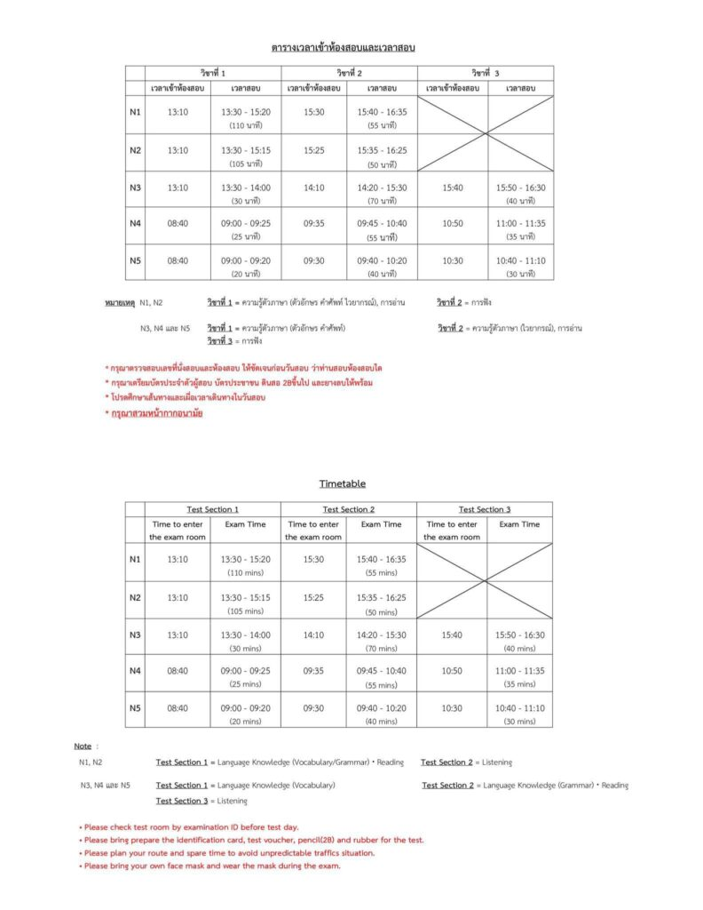
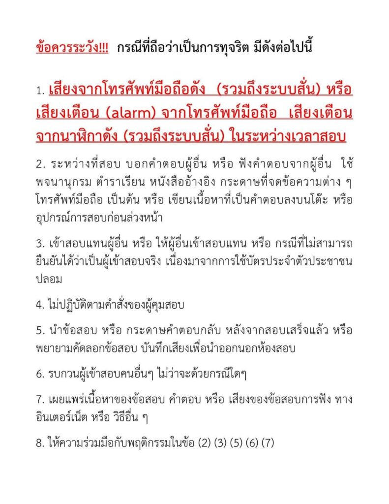
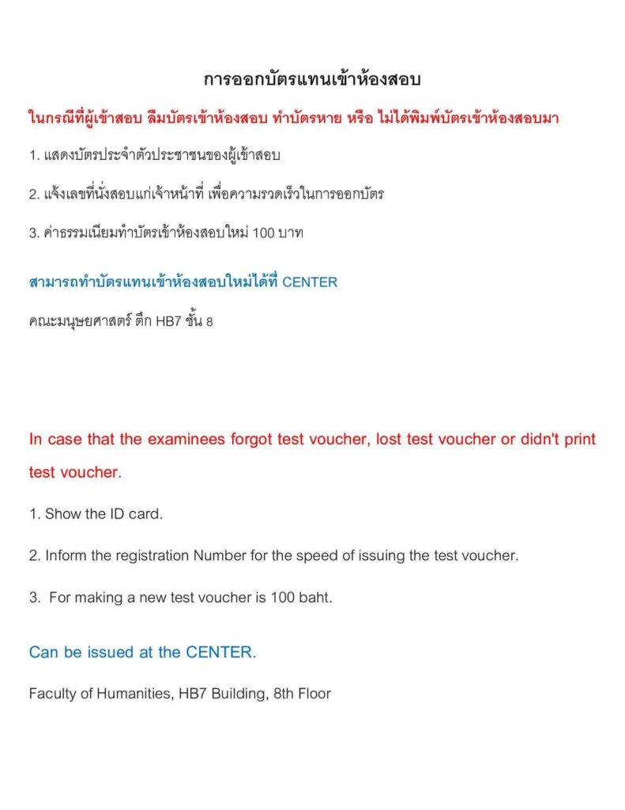
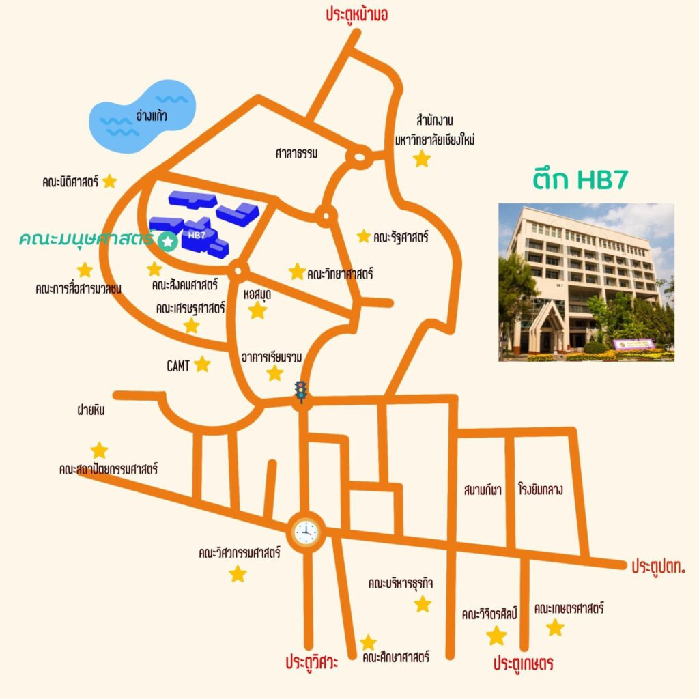

ประกาศห้องสอบวัดระดับความสามารถภาษาญี่ปุ่น (JLPT) ครั้งที่ 1/2024
เนื้อหาตามประกาศ ณ วันที่เผยแพร่ โปรดตรวจสอบกำหนดการและเงื่อนไขก่อนดำเนินการ
ประกาศตารางห้องสอบวัดระดับความสามารถภาษาญี่ปุ่น (JLPT) ครั้งที่ 1/2024 ศูนย์สอบเชียงใหม่
Announcement JLPT Rooms 1/2024 Chiang Mai Test Center
วันอาทิตย์ที่ 7 กรกฎาคม 2567 (July 7, 2024) ณ
ศูนย์สอบคณะมนุษยศาสตร์ ตึกHB7 (Faculty of Humanities, HB7)
(google map : https://maps.app.goo.gl/127eWURmsCKBLt926?g_st=il)
หมายเหตุ – สำหรับชื่อที่ปรากฏในประกาศห้องสอบ ไม่มีผลต่อการออกใบรับรอง เนื่องจากใบรับรองจะอิงจากข้อมูลที่ผู้สมัครกรอกในใบสมัครเท่านั้น
N4 และ N5 พร้อมหน้าห้องสอบ เวลา 08.30 น. (สอบช่วงเช้า)
N1, N2 และ N3 พร้อมหน้าห้องสอบ เวลา 13.00 น. (สอบช่วงบ่าย)
ประกาศรายชื่อแยกเฉพาะ N1
ประกาศรายชื่อแยกเฉพาะ N2
ประกาศรายชื่อแยกเฉพาะ N3
ประกาศรายชื่อแยกเฉพาะ N4
ประกาศรายชื่อแยกเฉพาะ N5
ติดตามข่าวสารของสมาคมนักเรียนเก่าญี่ปุ่นฯ สาขาภาคเหนือได้ที่
เฟซบุ๊คเพจ : https://www.facebook.com/ojsatn/ และ
เว็บไซต์ : www.ojsatn.or.th
#สอบวัดระดับภาษาญี่ปุ่น #JLPT #สมาคมนักเรียนเก่าญี่ปุ่นฯสาขาภาคเหนือ #OJSATN #ภาษาญี่ปุ่น #japaneselanguage








